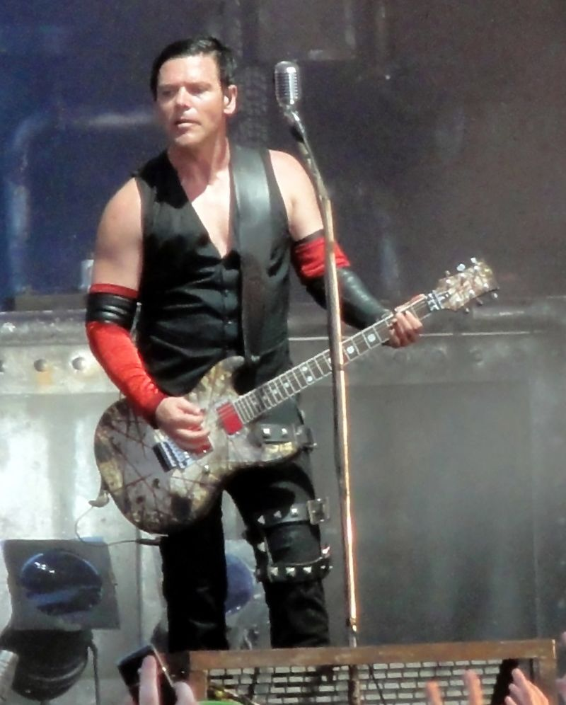
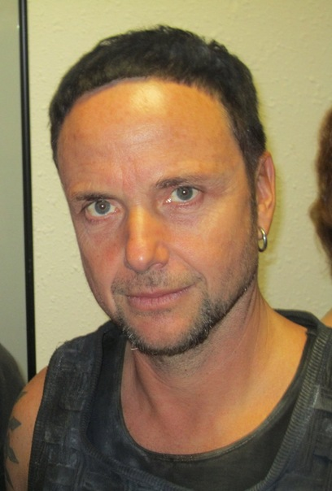
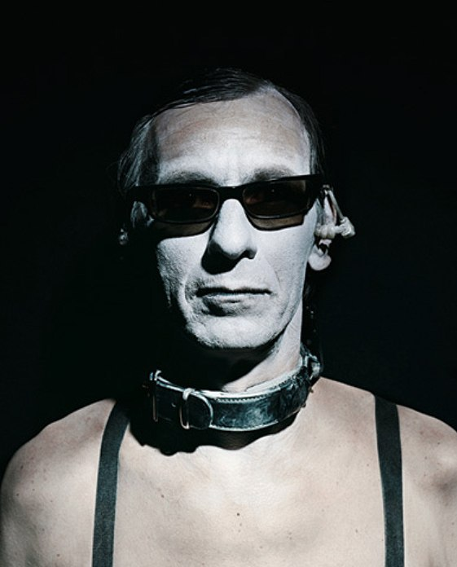
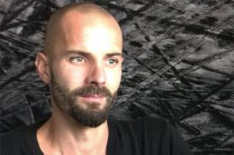
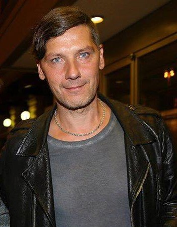

Тилль Линдеманн

Тилль Ли́ндеманн (нем. Till Lindemann; родился 4 января 1963, Лейпциг, ГДР) — немецкий вокалист, автор текстов песен и фронтмен метал-групп Rammstein и Lindemann. Принимал участие в записи некоторых песен групп Apocalyptica и Puhdys. Автор сборников стихов «Messer» («Нож»), «In stillen Nächten» («В тихие ночи»), снялся в 8 фильмах. Имеет образование пиротехника.
Тилль Линдеманн родился 4 января 1963 года в Лейпциге. Отец, Вернер Линдеманн — художник, писатель детских сказок, поэт (написал 43 книги). В городе Росток в честь него была названа школа. С отцом у Тилля были очень напряжённые отношения. В своей книге «Майк Олдфилд в кресле-качалке» («Mike Oldfield im Schaukelstuhl») Вернер Линдеманн, как в дневнике, описывает конфликт со своим 19-летним сыном Тиллем (правда, в книге героя зовут Тимм). Мать Тилля была журналисткой и в 1992—2002 годах работала на радио, кроме того, она неплохо рисовала.
Детские годы Тилль провёл в Шверине на северо-востоке Германии. Когда Тиллю было 12 лет, а его сестре — 6, родители развелись и мать вышла второй раз замуж за гражданина Соединённых Штатов Америки.
Отец при жизни хотел, чтобы его сын стал поэтом, и, в сущности, так и произошло: вокалист не только является автором песен группы Rammstein, но и выпустил сборники своих стихов: «Messer» («Нож») (2002 год) и «In stillen Nächten» («В безмолвии ночи») (2013 год).
Проведя половину детства в деревне Вендиш-Рамбов, Тилль, естественно, не мог не освоить многие типично сельские профессии. Его рабоче-крестьянская карьера началась задолго до спортивной с изучения столярного дела, впоследствии он освоил специальности плотника и корзинщика.
С юных лет Тилль увлекался спортом, в частности занимался плаванием; в 10 лет поступил в спортивную школу, готовящую резерв для сборной ГДР, и блестяще закончил её в 1980 году. В 1978 году он был членом сборной ГДР на чемпионате Европы по плаванию среди юниоров. Он должен был выступать на Олимпиаде’80 в Москве, но это ему не удалось. Его карьера пловца закончилась вскоре после того, как, приехав в Италию на соревнования, он покинул гостиницу, в которой расположилась команда, вместе со своей знакомой девушкой с целью посмотреть столицу Италии — Рим, так как раньше Тилль не имел возможности свободно выезжать за границу. Однажды ночью он вышел по пожарной лестнице из отеля лишь для одной цели — секс-шоп. На следующий день он вернулся в гостиницу, но неприятностей избежать не удалось — его вызвали на допросы в Штази (служба безопасности ГДР).
Но Тилль покинул плавание не только поэтому — основной причиной послужила травма мышц живота во время тренировки. Тилль Линдеманн разведён, есть 2 дочери, Неле и Мария-Луиза. В 2007 году старшая дочь Неле родила Тиллю внука, Фрица Фиделя. Отец Тилля умер в 1993 году.
В то время он общался со своим другом Рихардом Круспе. Именно Рихард и предложил Тиллю петь в новой группе, которую давно мечтал создать. Причём сам Тилль такой просьбе очень удивился, ведь он никогда не отмечал у себя особых вокальных способностей, однако Рихард заявил, что часто слышал, как Линдеманн поёт, владеет музыкальными инструментами, и уверен, что из него выйдет отличный вокалист. От предложения Тилль не отказался. Так он стал фронтменом новосозданной группы Rammstein. До этого Тилль играл на ударных в панк-рок-группе First Arsch и приглашался в коллектив Feeling B. В конце сентября 2011 года снялся в клипе группы Knorkator «Du Nich».
Линдеманн создал музыкальный проект Lindemann совместно со шведским продюсером и музыкантом Петером Тэгтгреном.
Рихард Круспе
{kind=link}
Ри́хард Цвен Кру́спе (нем. Richard Kruspe; урожденный Цвен Кру́спе нем. Richard Z. Kruspe; родился 24 июня 1967, Виттенберге, ГДР) — немецкий музыкант, наиболее известный как гитарист и основатель немецкой индастриал-метал-группы Rammstein и лидер Emigrate.
Родился Цвен в семье, где кроме него ещё были брат и сестра. Он был средним ребенком в семье. Годы детства прошли в маленьком городке Виттенберге и в соседнем Шверине, на севере ГДР. Позже Цвен взял себе имя Рихард.
В молодости огромное влияние на него оказали такие группы, как AC/DC и Kiss. И по сей день Рихард остается поклонником данного коллектива, что, впрочем, не помешало ему однажды, уже в позднее время, критически высказаться об их творчестве, в котором шоу призвано скрыть малое количество смысла в музыке.
В 12 или 13 лет родители отдали маленького Рихарда в спорт и около семи лет Рихард профессионально занимался борьбой, с чем связана масса рассказов о его рестлерском прошлом. По словам Рихарда, именно оно навеяло ему идею выбрать роль борца в небезызвестном клипе Mein Teil. Но спортивные увлечения не помешали нашему герою выбрать своей главной любовью другую стихию — музыку. Глаза на его предназначение Рихарду раскрыла в один прекрасный день девушка.
Таким образом, к 20 годам Рихард получил музыкальное образование в джаз-школе ГДР (каковое он имеет, кстати, единственный из «Rammstein»). Его мечтой было создать собственную группу, и в один прекрасный день он поехал в столицу, Берлин.
Здесь надо сказать, что на переезд Рихарда в Берлин повлияли, скорее всего, ещё и семейные обстоятельства. Он с детства жил без отца, с матерью и отчимом, и несколько раз говорил в разных интервью, что у него были не слишком хорошие отношения с обоими родителями. (Рихард о своей матери: «У меня с мамой не очень хорошие отношения, но я думаю, сейчас она считает, что я занимаюсь не последней ерундой». Известно, что в первый раз он привел свою мать на концерт Rammstein только в 2001 году.) Общеизвестна история про конфликт Рихарда с отчимом, когда тот сорвал со стены в его комнате постер с Kiss — группой, которую Рихард в свои 12 лет боготворил — и порвал его. Будущий гитарист проплакал всю ночь, но к утру плакат уже висел на своем прежнем месте.
Практически во всех командах, где Рихард тогда играл, его знали под псевдонимом Шолле (Scholle с немецкого переводится как «глыба» или как «камбала» — какое именно значение имел в виду Рихард, по сию пору остается для нас тайной). Шолле был совсем не похож на нынешнего Рихарда: его любимыми прическами в то время были длинные высветленные дрэды или стрижка со светлым мелированием, которую дополнял длинный хвост на затылке, и которую Тилль, вокалист ещё не основанной на тот момент группы Rammstein, по этой причине однажды окрестил «белочкой». Рихард уже в то время имел проблемы со Штази, поскольку не всегда выходил на работу. Это было одной из самых больших проблем для музыкантов ГДР, поскольку участие в музыкальном коллективе правительство за работу считать категорически отказывалось. Дополнительным способом его заработка в то время являлось то, что он сам мастерил и продавал разные украшения, что свидетельствует о неслабых творческих способностях не только в сфере высоких материй, но и в плоскости бытового конструирования. «В Берлине тогда у музыкантов было две возможности жить, — любит рассказывать Рихард. — Либо ты имел привилегии как профессионал и мог заниматься музыкой, либо ты вообще не имел права писать музыку, потому что официально тебе была присвоена иная профессия. Поэтому я мастерил украшения, продавал их на улицах Берлина, а в свободное время писал музыку. Потом я по совершенно бесчеловечному курсу обменял 15000 восточных марок, получил за них 1200 западных марок, и, встретив однажды в каком-то кафе человека „с той стороны“, спросил его, не мог бы он купить мне гитару. Тогда мне казалось: нужно только обзавестись навороченной гитарой, и тебе вообще не нужно будет уметь играть — она сама будет играть все как надо. И вот так я отдал этому человеку деньги, хотя почти его не знал. Деньги он взял — а потом пропал на два месяца. Я решил — да, времени было достаточно, чтобы понять, что меня облапошили. А 1200 западных марок тогда были действительно большой, очень большой суммой, которую я долго копил. Но незадолго до Рождества ко мне в дверь постучали — пришла посылка. Это была моя первая настоящая гитара. Но когда я её распаковал и сыграл, я понял — это всего лишь гитара…»
История покупки первой настоящей гитары нередко пересказывалась лидер-гитаристом в разных интервью, так же как и история о том, почему он однажды решил бежать из Восточной Германии. В Берлине в то время было очень неспокойно. Близился кризис ГДР-овской власти, в 89-м наступила знаменитая «осень демонстраций» — и в одну из таких демонстраций Рихард угодил спустя год после своего переезда. 10 октября с ним произошло событие, полностью определившее его взгляды на жизнь в ГДР. «В тот день я совершенно случайно попал на одну из этих демонстраций. Я был окружен полицейскими и увезён куда-то на окраину города на грузовике. После часа езды грузовик остановился где-то в районе Вайсензее. Целью была полицейская станция, и там меня держали 3 дня. 6 часов я должен был стоять около стены, и если я пробовал шевелиться, меня били. При этом я был совершенно ни в чём не виноват, но это полицию, конечно же, не интересовало. По прошествии трех дней я был полностью „готов“ и решил: хватит. Раньше у меня ещё никогда не было мыслей оставить ГДР. Но тогда мне стало ясно, я должен отсюда уезжать. Так я вскоре бежал в Австрию через „зеленую“ венгерскую границу. Мой путь привел меня в западный Берлин. Но я понимал, что это не самое лучшее решение…»
Конечно, решение было не идеальным — к беженцам с Востока в ФРГ относились не особенно хорошо. Однако музыкальная работа продолжалась, записывались демоверсии ныне канувших в лету песен, тогда ещё до боли похожих на их американские «шаблоны». В это же время Рихард расстался с матерью своей дочери Киры (ею, кстати говоря, была бывшая жена Тилля, они с Рихардом никогда не были женаты, и фамилия Линдеманн досталась девочке от матери), и в жизни его, как он позже говорил, наступила полоса глубокой депрессии. (Несмотря на то, что Рихард так официально и не признал Киру, поскольку ребёнок был незаконным, у него сохранились прекрасные отношения с дочерью. Несмотря на малый возраст, Кира уже успела поучаствовать в нескольких проектах, связанных с жизнью Rammstein — в 8 лет она снималась в песне Tier на знаменитом концерте Live aus Berlin в 98 году, в более старшем возрасте — в эпизодах клипа на песню Amerika, а её голос можно услышать в припеве песни Spieluhr).
После года, проведенного в западном Берлине, и падения стены Рихард снова вернулся на свою родину в Шверин, где начал работу над проектом Das Auge Gottes, которая оборвалась практически в самом начале. Именно тогда произошло знакомство Рихарда с будущим солистом Rammstein, а тогда — ещё только барабанщиком группы First Arsch Тиллем Линдеманном. К тому же времени относится самый известный проект, в котором участвовал Рихард — Orgasm Death Gimmick.
Однако в один прекрасный день ODG Рихарду показались слишком скучными — скорее всего, из-за их крайне неопределенного стиля — и, бросив на произвол судьбы так и не успевшее толком себя застолбить музыкальное детище, занялся планами относительно того, чтобы собрать другую команду. Ещё некоторое время он играл вместе с Die Firma, где произошло его знакомство с будущим барабанщиком Rammstein Кристофом Шнайдером. Тогда же были сказаны первые слова о новом совместном проекте, который тогда никто ещё не называл Rammstein. «В то время я частенько думал об Америке, — рассказывает Рихард. — И я обязательно хотел посмотреть на эту страну, где все казалось возможным. Здесь сыграло свою роль не только мое увлечение американской музыкой, но и просто желание посмотреть на новый, чужой мир. Восхищение этим миром. После многих лет в ГДР, после жизни за стеной Америка была для меня синонимом свободы». Тогда Рихард вместе с Оливером и Тиллем первый раз слетали в Америку. Именно после этого путешествия появились мысли о том, как важно сохранять свою индивидуальность, и возникла идея создать проект, связанный именно с немецкой музыкой.
Осталось сказать ещё пару слов о Рихарде и Америке, поскольку именно с этой страной он позже связал свою жизнь. Во время летнего тура Rammstein по США в 1999 году после концерта в Нью-Йорке 3 июня менеджер группы Эмануэль Фиалик познакомил Рихарда с его будущей женой, топ-моделью и киноактрисой Карон Бернштейн (в России известна по фильмам «Бизнес для наслаждения», «Кто этот мужчина», «Потерянные во времени» и др.) «Я ещё совершенно не знал английского, когда делал ей предложение, — признавался Рихард. — Это было большим переживанием для меня». Свадьба состоялась 29 октября 1999 года на пляже в Лонг Айленд. Она была проведена по еврейским обычаям и сопровождалась гитарной композицией, сочиненной Рихардом специально к этому событию. Свидетелем был Тилль Линдеманн. Правда, медового месяца у молодоженов так и не было, потому что через три дня после свадьбы Рихард был вынужден вернуться в Берлин, чтобы вместе с остальной группой приступить к работе над новым альбомом.
С тех пор Рихард долгое время имел два дома, по полгода живя в Германии, а по полгода в Америке, если группа не находилась в туре. Однако в 2003 году брачный союз Рихарда с Карон распался. Рихард имеет дочь Киру Ли Линдеманн (28 февраля 1991 года), сына Мерлина Бессона (10 декабря 1992 г.р.) и дочь Максим Аляску Босье (28 сентября 2011 г.р.). В 2011 году Рихард в третий раз стал отцом. 28 сентября 2011 года у него родилась дочь, которую назвали Максим Аляска Босье (Maxime Alaska Bossieux). Мама девочки — Марго Босье (Margaux Bossieux), гитаристка и бэк-вокалистка группы Emigrate (сольного проекта Рихарда) и бывшая бас-гитаристка Нью-Йоркской панк-рок-группы Dirty Mary.
В 2002 году Рихард переехал в Нью-Йорк окончательно. Некоторое время он жил в Сохо, в квартире, оборудованной собственной студией, потом переехал оттуда.
Нерасплесканный креатив, однако, до сих пор не дает Рихарду спокойно жить. Из новейшей истории доподлинно известно, что именно он послужил одной из причин того самого кризиса, в котором оказалась группа в момент работы над четвёртым студийным альбомом Reise, Reise — и выход нашёлся только тогда, когда Рихарду дали «добро» на работу с собственной студийкой.
Эта студийка под названием Emigrate увидела свет в 2007 году. После её выхода Рихард был полон надежд съездить в тур со своим личным альбомом, однако ему помешало то обстоятельство, что к тому времени уже пора было начинать работу над новым студийным альбомом Rammstein — Liebe ist für alle da.
Пауль Ландерс
{kind=link}
Пауль Хайко Ландерс (нем. Paul Heiko Landers), урождённый Хайко Пауль Хирше (нем. Heiko Paul Hirsche; род. 9 декабря 1964 года, Берлин, ГДР) — немецкий музыкант, ритм-гитарист группы Rammstein.
Детство Хайко Пауль Хирше провел в Берлине, в районе Баумшуленвег. В школе учился посредственно и обладал очень слабым здоровьем, что породило слухи о том, что он родился недоношенным.
Год он жил в Москве на улице Губкина и учился в школе при посольстве ГДР. Изучал там русский язык и хорошо им владеет, демонстрируя своё знание в интервью русским телеканалам и на концертах в России.
У Хайко Хирше была сестра на три года старше него, которая училась играть на фортепиано. Он также учился игре на фортепиано, однако учительница музыки была недовольна его поведением. После обучался игре на кларнете.
Помимо музыкальных увлечений, Хайко Хирше занимался конструированием. Среди его примитивных изобретений была лампа, которая включалась каждый раз, когда открывалась дверь в его комнату. Также Хирше был членом кружка «Юные матросы».
В возрасте 16 лет он покинул родительский дом из-за постоянных ссор с отчимом. Хайко Пауль Хирше несколько раз менял своё имя, в конце концов полностью исключив Хайко, что сделало его имя — Пауль Хирше.
В 1983 году Пауль Хирше совместно с Кристианом Лоренцем и Алёшей Ромпе основывает панк-рок-группу Feeling B, к которой позже присоединился Кристоф Шнайдер. В 1986 году вместе с Тиллем Линдеманном и Рихардом Круспе принимает участие в формировании другой группы, First Arsch. Кроме того, играл в ряде других музыкальных групп, включая Die Firma и Die Magdalene Keibel Combo.
В 1994 году Линдеманн, Круспе, Шнайдер и бас-гитарист Оливер Ридель принимают участие в фестивале Berlin Senate Metro Beat Contest и становятся победителями. Это позволяет им записать 4 демо-трека в профессиональной студии. К ним вскоре присоединятся Ландерс и Флаке, и новообразованная группа берёт название Rammstein.
Кристиан Лоренц
{kind=link}
Кри́стиан Фла́ке Ло́ренц (нем. Christian Flake Lorenz; род. 16 ноября 1966, Восточный Берлин, ГДР) — немецкий музыкант, наиболее известный как клавишник немецкой индастриал-метал-группы Rammstein.
Кристиан Лоренц родился в Берлине. Семья была довольно благополучной: отец — инженер-конструктор, позже он даже стал директором своего предприятия. Flake в имени имеет немецкое («Флаке»), а не английское («Флейк») произношение, при том, со слов самого Кристиана в одном из интервью, что «Флаке» это не псевдоним, как иногда считается, а его реальное имя, данное при рождении, хотя в прессе также распространено написание в кавычках.
Вопреки распространённому мнению, Кристиан не получал высшее образование: «Чтобы поступить в высшее учебное заведение, нужно было сначала отслужить. Но в армию мне идти не хотелось, так что от карьеры доктора пришлось отказаться». Работал грузчиком на бойне, затем выучился на слесаря-инструментальщика. Вместе с Паулем Ландерсом и Кристофом Шнайдером позже он окажется самым профессиональным музыкантом в Rammstein: за их плечами было участие в Feeling B — группе, сделавшей себе имя в Восточной Германии ещё до падения Берлинской стены. Она была одной из первых немецких панк-команд, которой удалось выпустить диск ещё в 1989 году. Затем группа выпустила ещё два альбома и видео.
Оливер Ридель
{kind=link}
О́ливер Ри́дель (нем. Oliver Riedel; род. 11 апреля 1971, Шверин, ГДР) — немецкий музыкант, наиболее известный как бас-гитарист немецкой группы Rammstein.
Родился и вырос в восточногерманском Шверине. До 16 лет жил вместе со своими отцом и братом. Они погибли за 2 дня до его 17-летия, только после этого он познакомился со своей матерью. Сменил множество профессий, работал штукатуром-маляром, оформителем витрин магазинов.
Увлекается экстремальными видами спорта, например, сёрфингом. Спокойная сторона его натуры выразилась в увлечении профессиональным фотографированием и занятиях йогой. С 1992 по 1994 год был участником группы The Inchtabokatables.
Кристоф Шнайдер
{kind=link}
Кристоф «Doom» Шнайдер (нем. Christoph Schneider; 11 мая 1966 года, Восточный Берлин, ГДР) — немецкий музыкант, по прозвищу «Doom», наиболее известен как барабанщик индастриал-метал-группы Rammstein.
Кристоф Шнайдер родился 11 мая 1966 года в берлинском округе Панков в Восточной Германии. Отец — Мартин Шнайдер — был постановщиком, оперным режиссёром и преподавателем в университете искусств Берлина, мать — преподавателем музыки в консерватории Hanns Eisler. В семье было два ребёнка. Сестра Шнайдера Констанс, на два года моложе его, в первое время существования Rammstein шила вместе с ним костюмы для малоизвестной тогда группы.
Увлечение музыкой началось с того, что родители Кристофа захотели, чтобы их сын стал музыкантом, и отдали его в музыкальную школу. Там ему были предложены на выбор труба, кларнет и тромбон. Он остановил свой выбор на трубе. Однако его всегда завораживала игра ударников. И он занялся игрой на барабанах самостоятельно, сначала на самодельной установке, сделанной из консервных банок и вёдер, а позже, в 14 лет, он купил свою первую установку. После чего родители, сторонники классической музыки, ранее активно сопротивлявшиеся его переходу к ударным, успокоились и практически одобрили увлечение сына.
Свою профессиональную деятельность Шнайдер начал в дворовых группах, где выступал вместе с друзьями. Кристоф попытался профессионально обучиться игре на барабанах, но провалил вступительный тест. С ударными он справился, а вот фортепиано, пение и нотная грамота его подвели. Таким образом, не получив должного образования, Шнайдер самостоятельно обучился игре на ударных, ориентируясь на любимую музыку.
В 1984 году Кристоф, единственный из участников Rammstein, проходил службу в армии. Вернувшись из армии, работал в телекоммуникационной компании, разнорабочим, два года был грузчиком на горной метеостанции. Вернувшись к музыке, играл на барабанах в группах Keine Ahnung, Frechheit, Die Firma, в которой играл вместе с Рихардом Круспе, а также Feeling B. Там он познакомился с Паулем Ландерсом и Кристианом Лоренцем, будущими согруппниками по Rammstein.